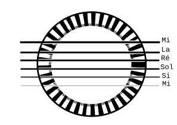

L es cordes à vide
- La guitare possède six cordes , qui sont de la plus épaisse à la plus fine : Les cordes de Mi, La, Ré, Sol, Si et Mi.

C haque corde porte le nom de la note qu'elle produit lorsqu'on la joue sans appuyer sur une case. On parle alors de corde à vide .

L es cordes à vide sur la portée
- Chaque corde à vide de la guitare est représentée par une note sur la portée.
- Observez attentivement l'emplacement de chaque note et associez-le à la corde correspondante de la guitare.
I Il est très important de mémoriser ces six notes car elles constituent la base de la lecture de partition à la guitare.
L a mesure
- La mesure est la division d’un morceau en parties de durée égale.
- Chaque mesure est délimitée par des barres verticales sur la portée.
- Les mesures facilitent la lecture de la partition.
L a noire
- En solfège, les durées des notes sont appelées figures.
-
La noire est la première figure
rythmique à connaître.
Elle vaut un temps.
- Elle se dessine avec un cercle plein et une hampe.
L e silence qui correspondant à une noire s’appelle le soupir.

E xercice
Jouer les cordes à vide avec le pouce
- Dans cet exercice, on utilise uniquement le pouce de la main droite , noté p sur la partition.
- Joue chaque corde lentement et laisse-la résonner avant de passer à la suivante.
- Le pouce doit effectuer un mouvement souple et régulier , sans toucher les cordes voisines.
- Écoute d'abord l'enregistrement, puis reproduis le même rythme en recherchant un son clair et équilibré .
🎧
E xercice
Rejouer le morceau avec D.C. al Fine
- Cet exercice introduit l'indication musicale D.C. al Fine.
- Elle signifie « reprendre depuis le début » jusqu'au mot Fine , qui marque la fin du morceau.
- Écoute attentivement l'enregistrement avant de jouer afin de bien comprendre le retour au début .
🎧
E xercice
Jouer avec l'index, le majeur et l'annulaire
- Les lettres i, m et a indiquent les doigts de la main droite utilisés pour jouer.
- Elles correspondent respectivement à l'index , au majeur et à l'annulaire .
- Place les doigts avant de commencer : l'index sur la corde de Sol, le majeur sur la corde de Si, et l' annulaire sur la corde de Mi aigu.
- Le pouce se déplace sur les cordes Mi grave, La et Ré.
- Garde les doigts proches des cordes et effectue des mouvements courts afin d'obtenir un jeu précis et régulier .
🎧
E xercice
Jouer les cordes à vide avec les doigts p, i, m et a
- Les chiffres 0 inscrits sur la partition indiquent que les notes sont jouées sur des cordes à vide .
- Utilise les doigts p, i, m et a en respectant les indications de la partition.
- Écoute attentivement l'enregistrement puis reproduis le même rythme et le même tempo .
- Cherche à obtenir un jeu fluide et régulier , sans mouvements inutiles de la main droite.
- Cet exercice permet de développer la coordination et l' indépendance des doigts , deux qualités indispensables pour le guitariste.
🎧